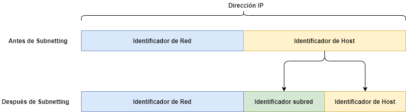
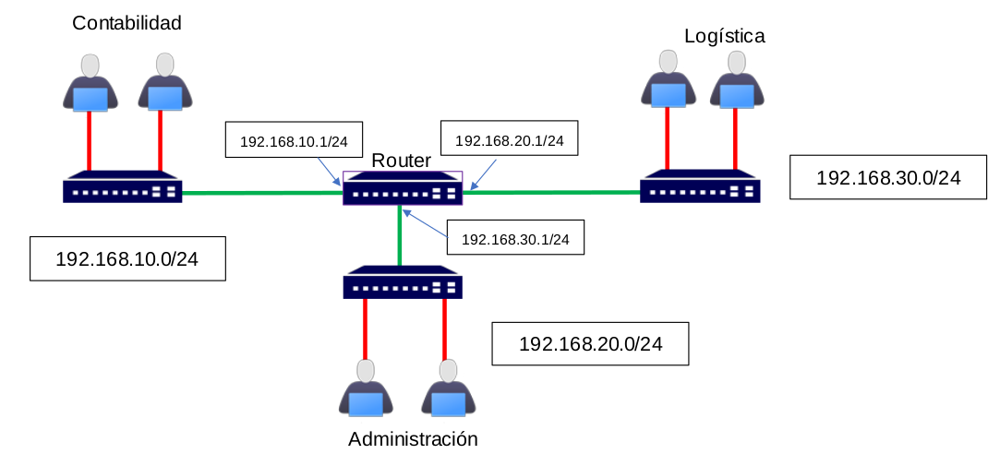

5. Subnetting y Supernetting
1. Introducción
Las IPv4 son de 32 bits, lo cual da un total de (2^32) 4.294.967.296 diferentes IP. Aunque este número puede parecer muy grande, si lo comparamos con la población mundial y el número de dispositivos conectados sería inviable que cada dispositivo tuviese una IP única.
Como se comentó en el apartado 3. Segmentación de redes, una de las medidas que se adoptaron fue el uso de NAT para ahorrar direcciones o la distinción entre IP pública e IP privada.
Dentro de las IP privadas, como las opciones son limitadas, se crearon 2 grandes formas de gestionarla basándose en las necesidades que tuviera cada usuario.
Una subred es un rango de direcciones lógicas. Cuando una red crece y se hace muy grande, es conveniente dividirla en subredes, por los siguientes motivos:
- Reducir el tamaño de los dominios de broadcast.
- Hacer la red más manejable, administrativamente.
2. Subnetting
El Subnetting trata de la subdivisión de una red en otras subredes más pequeñas, las cuales serán más sencillas de gestionar y además:
- Se reduce el tamaño de los dominios de broadcast.
- Hace la red más manejable, administrativamente.
- Las conexiones entre los equipos son más rápidas, ya que solo transcurren en ese segmento de red y no en toda la red.
2.1 ¿Cómo funciona?
De los 32 bits que contiene una IP, se toma un bit de la parte de los hosts para destinarla a la creación de una subred.

Figura 1. Subnetting.
Si se toma un bit, se genran 2 subredes, si son 2, 4 subredes, si son 3, 8 subredes y así sucesivamente. Esto también hace que el número de hosts disponibles por cada subred sea menor.
3. Ejemplo subnetting
Se tiene la red 192.168.100.0/24 y nos solicitan dividir la red en dos subredes para 2 aulas de un centro educativo. Lo primero que se hará para calcular el rango de red que se tendrá es pasar la red a binario:
- 192.168.100.0 – 11000000.10101000.01100100.00000000
Ahora se coge la máscara de red que le pertenece y se le añade un bit. Si se añade un bit a la parte de red, la máscara 255.255.255.0 se quedaría en 255.255.255.128. Así se ve en binario:
- 255.255.255.0 - 11111111.11111111.11111111.00000000
- 255.255.255.128 - 11111111.11111111.11111111.10000000
Al haber cogido un bit más de red, esto supone que la parte de host solamente podrá ir de 0 a 127 en cada subred en este caso.
Por tanto, la red 192.168.100.0/24 con el Subnetting ya aplicado tendrá como hosts:
- desde 192.168.100.0 hasta 192.168.100.127 en una red, es decir, 192.168.100.0/25
- y desde 192.168.100.128 hasta 192.168.100.255 en la otra, es decir, 192.168.100.128/25.
Para calcular las nuevas direcciones IP de las subredes, se pone una IP del rango de la red en binario y justo debajo se pone la máscara de red correspondiente en binario también. Luego se tendrá que realizar una operación AND.
Como ejemplo, se eleige una IP de las 2 subredes:
192.168.100.126 - 11000000.10101000.01100100.01111110
255.255.255.128 - 11111111.11111111.11111111.11111110
Red resultante: 11000000.10101000.01100100.00000000 – 192.168.100.0/25
Vídeo 1. Direccionamiento IP y subredes - 17:41 min.
En la siguiente figura, se puede observar un ejemplo de subnetting donde quedan separados los departamentos. En el caso de que un ciberdelincuente acceda a un equipo de contabilidad (quedaría comprometido), lo que podría hacer a continuación, es hacer intentar hacer un movimiento lateral hacia el otro equipo.
"El movimiento lateral es el conjunto de pasos que toman los atacantes que se han afianzado en un entorno confiable para expandir su nivel de acceso, moverse a activos confiables adicionales y avanzar más en la dirección de su objetivo final. Es difícil de detectar, ya que a menudo se mezcla con el gran volumen de tráfico legítimo similar de este a oeste en el medio ambiente". Fuente.
Dado que está en el mismo segmento de red, puede hacer un escaneo de la red para intentar encontrar dispositivos conectados a la misma. El ciberdelincuente se podría llevar información de los equipos de contabilidad, pero es posible que no consiga acceder al resto de equipos de los diferentes departamentos dado que están en otras subredes y si las salidas del router están suficientemente fortalecidas.

Figura 2. Ejemplo de Subnetting.
4. Uso
Solo se usará subneting como apoyo a la segmentación física de dominios de difusión y en caso de necesidad. Si se trabaja con direcciones IP privadas, la práctica más segura siempre que sea posible es el uso de redes diferentes en vez de usar esta técnica de subdivisión.
Puedes investigar más sobre subnetting con una calculadora.
5. Supernetting
Si el subnetting consistía en dividir redes en subredes cambiando la estructura del identificador de host, el supernetting trata de agrupar redes o subredes. Es importante tener en cuenta que deben ser redes contiguas.
Se habla entonces de CIDR. Se refiere al encaminamiento entre dominios sin clase. Es una técnica que permite resumir un conjunto de direcciones IP contiguas de una red de una clase en una misma dirección de red.
Ejemplo:
Se pueden agrupar varias direcciones de tipo C en una de clase B, o varías de tipo B en una de tipo A. Con esto se consigue que las tablas de encaminamiento de los routers no crezcan demasiado y se agilicen los mecanismos de control del encaminamiento.
Comparando esta técnica con las subredes, se puede decir que son inversas, con las subredes se aumentan los dominios de difusión (direcciones de red) y con las superredes se disminuyen las direcciones de red.
En 1993 se eliminó la restricción del espacio de direcciones con clase, adoptándose un esquema o notación en el que se utiliza una longitud de prefijo común arbitraria para indicar la dirección común de red de un bloque de direcciones de red contiguas que se quieren resumir en una sola dirección de red. Este esquema o notación es lo que se conoce como formato CIDR o de superred y que representa una alternativa al direccionamiento IP con clase. Por consiguiente, el concepto de clases A, B y C desaparece al usar prefijos diferentes a los prefijos obligatorios de dichas clases.
5.1 ¿Cómo funciona?
Una dirección IP tiene bits que definen características de red y bits que definen características de host. Si se utiliza la dirección 192.168.0.0, se podrían direccionar 254 hosts (28-2=254). Si los elementos que forman la red soportan CIDR, se puede conseguir que esta dirección de red sea capaz de identificar más de 254 máquinas.
Con CIDR se puede utilizar bits del tercer octeto para generar más direcciones de host.
5.2 ¿Qué compone una ruta?
Una ruta se compone de un conjunto de direcciones IP entre las que se encuentran:
- ID de red: es el valor que representa a una red (192.168.1.0/25)
- ID de broadcast: última dirección de la red (192.168.1.127/25)
- Máscara de subred y valor CIDR: es el mismo valor, pero se utiliza un sistema de notación distinto (255.255.255.128 o /25).
Ventajas:
- Principalmente la ventaja más significativa que se consigue es que las tablas de encaminamiento de los routers no crezcan demasiado y se agilicen los mecanismos de control del encaminamiento.
Ideas clave:
- Trata de agrupar redes o subredes. Es importante tener en cuenta que deben ser redes contiguas.
- Las rutas solo pueden resumirse en rutas más grandes, no podremos resumir una ruta con tamaño de bloque 32 en una ruta de tamaño de bloque 16. Sin embargo si que será posible resumir dos rutas de tamaño 16 en una sola ruta de tamaño 32.
5.3 Ejemplo de supernetting
Si se cogen 2 bits del tercer octeto, se pueden conseguir 210 direcciones para equipos.
Para poder conseguir esto se debe especificar que la máscara de red utilizada es la 255.255.252.0 o utilizando otra notación 192.168.0.0/22.
| Dirección de red | Binario | Máscara de red |
|---|---|---|
|
192.168.0.0 |
11000000.10101000.00000000.00000000 | 255.255.252.0 |
Por otra parte, con esta técnica, se pueden agrupar direcciones de red en una sola. Suponiendo que se tienen las siguientes direcciones de red:
| Dirección de red | Binario | Máscara de red |
|---|---|---|
| 192.168.0.0 | 11000000.10101000.00000000.00000000 | 255.255.255.0 |
| 192.168.0.1 | 11000000.10101000.00000001.00000000 | 255.255.255.0 |
| 192.168.0.2 | 11000000.10101000.00000010.00000000 | 255.255.255.0 |
| 192.168.0.3 | 11000000.10101000.00000011.00000000 | 255.255.255.0 |
Si se observan las direcciones expresadas en modo binario se puede ver como las cuatro direcciones varían entre sí en los dos últimos dígitos del tercer octeto (resaltado en negrita). Si se utiliza CIDR, se pueden aglutinar estas cuatro direcciones de red en una sola si se utiliza la máscara de red 255.255.252.0. La dirección de red que representaría a estas cuatro sería:
| Dirección de red | Binario | Máscara de red |
|---|---|---|
| 192.168.0.0 | 11000000.10101000.00000000.00000000 | 255.255.252.0 |
Utilizando otra notación: 192.168.0.0/22
Como se puede ver, la clave de CIDR es utilizar una máscara según necesidades, sin respetar el concepto de las máscaras asociadas a direcciones de tipo A, B o C. Para poder hacer esto, los dispositivos de encaminamiento deben soportar CIDR.
Obra publicada con Licencia Creative Commons Reconocimiento No comercial Compartir igual 4.0